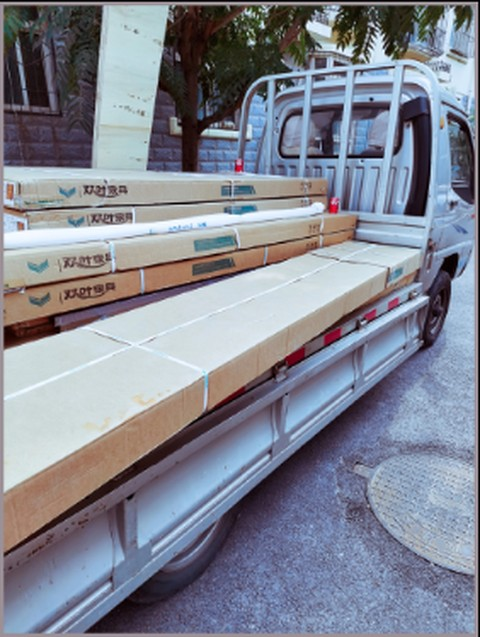
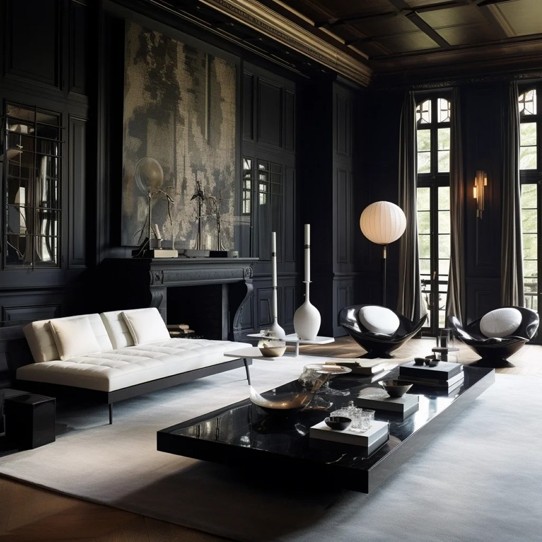

The bottleneck is information, not length
Text-to-image generation inherited language modelling’s recipe — bigger backbones, more data, more compute. On simple prompts this translates cleanly into quality. On the prompts people actually find hard — multi-object compositions, precise spatial layouts, attribute–object binding, world-knowledge probes — it has stalled.
There is a reason the analogy breaks. A language model learns from the text stream itself; a text-to-image model can only learn to render what its captions expose about the pixels. Visual content a caption omits, or binds ambiguously, stays in the image but is weakly supervised. So the image-grounded information a caption carries is a fourth axis — parallel to model, data, and compute — that bounds what a diffuser can learn to recover from text, yet it has rarely been treated as an explicit training variable.
The natural fix would be longer, more detailed captions. We show that does not work — because length and information are not the same thing. Lengthening a natural-language caption typically adds paraphrase, discourse connectives, and implicit cross-references; it rarely adds new image-grounded conditioning content per token. The optimizer sees more text but no more signal, and the saturation on long-prompt benchmarks is the predictable consequence.
We make this concrete with a fixed-backbone reconstruction probe. A caption is informative to the extent that a diffuser conditioned on it can reproduce a held-out reference image. Using the same Qwen-Image backbone and seed, we reconstruct one reference from natural-language captions of increasing length and from structured prompts of increasing schema coverage, and read off image-side similarity (DINOv3, SigLIP2, and LPIPS).
The natural-language reconstructions barely change as the caption grows; the structured ones get steadily more faithful. The constraint is the caption format, not its length — which points to a fourth scaling axis, parallel to and independent of model, data, and compute: the information content of the caption itself.
Two metrics for caption information
To treat “information” as a scaling quantity we have to measure it. We use two metrics with deliberately different assumptions, so that their agreement means something.
Grounded Perplexity Gain (GPG) is white-box. Fix a frozen vision–language judge (here Qwen3.5-397B-A17B) and, for each content token of a caption, measure the log-likelihood it gains once the image is revealed. Summed over the caption, this is the empirical mutual information between caption and image under that judge — how much the picture “explains” the words. A caption full of precise, image-grounded detail scores high; one full of generic prose scores low no matter how long it is.

“A silver pickup truck transports cardboard boxes, a wrapped cylinder, and Coca-Cola cans on a street.”
illustrative data — each bar is a token’s surprisal under the judge. The blue base is the surprisal that remains with the image; toggle the image off and the amber part grows — how much the picture explains, the per-token grounding gain. Their sum is GPG. Grounded tokens (silver, truck, cardboard) light up; filler (a, on, and) barely moves.
Effective Detailness (ED) is black-box. It never looks at log-probabilities. Instead it extracts the attribute tuples a caption asserts — colors, materials, positions, relationships — and scores their precision and recall (F0.5, weighting precision over recall, so hallucinated attributes are punished more than missing ones) against an image-grounded source set. The image side is extracted once, offline, by Gemini 3 Pro; caption extraction and matching are then pure text-to-text (GPT-5.4), with no log-probabilities in the loop.
hover a tuple → its region
the caption asserts
the image contains (source set)
illustrative data — green tuples appear in both (matched); red are in the caption only (hallucinations — they lower precision); grey are in the image only (missed — they lower recall). ED weights precision over recall (F0.5), since a hallucinated attribute hurts generation more than a missing one.
The two metrics share almost no machinery: one queries a model’s internal probabilities, the other compares extracted facts. If either were merely reflecting its own idiosyncrasies — a judge’s distribution, an extractor’s vocabulary — they would rank captions differently. That they do not is the first sign both are tracking something real.
The text prompt scaling law
With a way to measure caption information, we can ask whether it predicts anything. It predicts the central quantity in diffusion training: the converged loss.
We assemble 15 caption configurations from one set of full image annotations — three natural-language controls, the six nested structured-prompt levels (L5–L10), three spatial-grid variants, and three field ablations — and train a separate diffuser (a shared BAGEL checkpoint) on each to a common budget of 2.84×1010 image tokens, holding the images, architecture, and optimisation fixed so the caption is the only changing variable. Then we plot converged MSE against each information metric. Hover any point below for its values.
MSE = 0.4200·ED−0.2073 (r = −0.971)
Read it family by family. Natural-language cells (red squares) cluster at the left — GPG ≈ 110, creeping up only slightly as the caption lengthens (GPG is a token sum) — while their losses barely move. Structured prompts (blue circles) march down the line as the schema grows richer. Spatial variants and field ablations land exactly where their GPG predicts. Length appears nowhere in the law; information is everything.
The slope has a clean reading: it is an exchange rate. Every nat of caption information buys a fixed reduction in training loss, regardless of where that nat comes from. And the law is not a fragile fit. Fit on the natural-language and nested-SP families alone, it predicts the six held-out spatial and field variants to mean-absolute MSE errors of 5.0×10−4 (GPG) and 8.1×10−4 (ED); its residual standard deviations are ≈ 6×10−4 and ≈ 7.8×10−4; budget-wise refits preserve both relations; and the two rulers, built from disjoint machinery, rank all 15 cells the same way (ρSpearman = 0.96). The law tracks caption information itself, not either metric’s design.
A scaling law is only useful if you can move along it. Caption information factorises into two levers we can raise independently — schematically, Quality ≈ Diffusability × Promptability. Diffusability is the quality ceiling a caption format affords; Promptability is how much of that ceiling a real prompter reaches. The next two sections raise each in turn.
Raising Diffusability: the structured-prompt schema
Diffusability is a property of the caption format, so we raise it by replacing free-form prose with a typed JSON schema in which every conditioning axis has its own addressable slot: a global intent; a scene block; per-element entries with explicit bounding boxes, depth, materials and pose; inter-element relationships that reference those boxes; and a photography block for global camera parameters. Each token now populates a field value — a coordinate, an attribute, an element index — rather than extending a sentence, so the length actually carries conditioning information.

Every object is its own addressable slot — a bounding box, a depth, a caption, and typed attribute fields. Foreground elements and scene elements together tile the whole image; the prompter fills each slot, and the diffuser renders from them. Hover to locate a slot; click to pin its fields; “show all regions” reveals the full layout.
Populating this schema for every training image is a heterogeneous perception problem, so we build it with a five-stage pipeline of frozen domain experts. A VLM (Seed-VL) recovers the global scene and per-element semantics; Sapiens contributes 133 pose keypoints for human elements, DepthAnything V2 estimates relative depth, and SAM 2.1 supplies masks and occlusion cues; a final VLM pass reconciles this evidence — kept as intermediate signal, never copied into the schema as raw predictions — into one coherent full-schema (L10) SP. To separate schema richness from annotation quality, the six controlled levels below are then derived from each L10 record by deterministic field removal, so richness varies without re-annotating the image.
Restoring one field group at a time nearly doubles GPG, from 112 to 210, and walks the converged loss straight down the scaling law, 0.4466 → 0.4370. Ablating each group from the full L10 schema, retrained at the same budget, shows where the information lives. Scene background dominates: removing it costs 42 GPG nats and +35×10−4 MSE, a substantially larger loss increase than any other field. Bounding boxes are second: removing them costs only about 6 GPG nats yet still +14×10−4 MSE — explicit coordinates help the diffuser more than the judge’s score alone reveals. Removing depth, relationships, or atmosphere/lighting changes the loss by at most 1.5×10−4. The schema we ship is one high-Diffusability instantiation; the scaling law makes the design falsifiable — any format that scores higher on the rulers should land lower on the loss curve.
Addressable fields have one more consequence. Because the structured prompt annotates the image exhaustively, changing a single field and re-rendering alters exactly that aspect while the rest of the composition stays put — the fields are honoured independently and faithfully. Each edit below is zero-shot on the fixed backbone and touches one field; the Move edit also overlays the old (dashed red) and new (green) bounding boxes.
Raising Promptability: training the prompter
A schema’s ceiling is only worth as much as the prompter that fills it. Promptability is how reliably an LLM populates the schema’s slots with precise, internally consistent values rather than generic or contradictory ones. The failure modes are specific. A weak prompter emits valid JSON but fills it with safe, photogenic defaults — a centred subject, a clean background — collapsing the very compositional variety the schema exists to express. Or it writes coordinates and relationships that contradict one another, which the diffuser then cannot satisfy. A strong prompter realises near the ceiling; a weak one wastes most of it. And because at inference there is no reference image, Promptability shows up directly as realised generation quality.
It is raised by two complementary forces. The first is scale. Across the Qwen3.5 family, from 0.8B to 397B, GenEval++ accuracy climbs from 46.4% to 86.8%, still rising in the mixture-of-experts regime. Letting the prompter reason in a chain of thought helps too, sharpening the finer structure and preference metrics at every size except the smallest — where the 0.8B model tends to loop before producing valid JSON. Because the diffusion backbone is frozen throughout, progress in language models propagates straight into image quality with no retraining of the renderer: the prompter is a scaling lever in its own right, and every advance in open LLMs is an advance in generation.
The second force is the three-stage training pipeline above; what each stage actually does is worth spelling out. SFT teaches the structured-prompt distribution — which field combinations actually occur in real images. A base model, pre-trained on image–caption pairs, has only ever seen photogenic compositions, so asked for “a book with only its left half in frame” it quietly re-centres it. After fine-tuning on our SP corpus the prompter instead emits a bounding box that runs past the canvas edge, and the diffuser renders the truncation faithfully. SFT is the single largest jump (structure 4.9 → 6.3, GSB to 23%) — what it adds is distributional knowledge of structured prompts, not format syntax.
Cold-start grafts an image-grounded chain of thought. We distil (prompt → reasoning → JSON) traces from a teacher that is shown the reference image but is system-prompted to frame its reasoning as a derivation from the user’s prompt alone — never “I see X in the image.” A Gemini judge keeps only the traces whose reasoning is consistent with the caption, image, and target SP. The student learns that derivation style; at inference, with no image in hand, it reconstructs an admissible analysis from the prompt before emitting the schema. This is what lets a single forward pass produce a globally consistent layout rather than a bag of locally plausible fields.
RFT then moves training onto the prompter’s own rollouts. The fixed diffuser renders each one, and a QA verifier accepts or rejects it, screening for prompt coverage, structure, and aesthetics. Crucially the verifier is a gate, not a reward: it cannot supervise the plausible visual detail a request leaves unspecified, so the parameter update comes instead from OPSD — on-policy self-distillation from a frozen teacher that sees the reference image, matching its next-token distribution along the accepted rollout into the image-free student. Neither the verifier score nor GPG is optimised directly. This verifier-gated OPSD lifts structure 6.8 → 7.6 and human GSB to 42% over the base prompter, while DPG-Bench — near-saturated for every variant — reaches 90.71.
These levers compose. At inference, an optional refine–render–judge loop spends extra compute on the prompt side: render the structured prompt, have an online Gemini judge return PASS or a field-level critique over structure, alignment, and aesthetics, and rewrite only the offending slots — repeating up to Tmax rounds or until PASS. Because the prompt is a structured object, a critique becomes a targeted edit rather than a rewrite of the whole caption. But the returns are modest: the trained prompter reaches 53.7% GSB by four rounds and only 54.3% by eight. Unlike reasoning-style tasks, once the prompt-side specification is substantially right, further rounds cannot fix how the diffuser renders it — so the bottleneck, having moved from the model to the caption, moves back to the model.
Results
Put together — structured captions measured by GPG and ED, produced by a scaled, verifier-gated prompter — the system leads open-weight text-to-image models on nearly all compositional, reasoning, and world-knowledge benchmarks, single-shot, with the diffusion backbone held fixed, and matches the strongest closed systems on most. The benchmarks probe complementary skills: object-centric and compositional alignment (GenEval, GenEval2), dense and information-intensive prompt following (DPG-Bench, TIIF), world knowledge (WISE), and composition-plus-reasoning (CoReBench). Among open-weight systems it leads every column but one — TIIF-short, where it trails Emu3.5 by 0.4 points (89.1 vs 89.5).
A same-architecture control isolates the interface from scale and extra training. Against the original Qwen-Image, the complete system raises GenEval2 Soft-TIFA GM from 33.8 to 72.5 and CoReBench from 58.9 to 85.2. More stringently, retraining that same diffuser and prompter on the same images, stages, and budgets but with a free-form natural-language interface (Matched NL) stays near the official prompt enhancer (GM 36.5 vs 36.1; CoReBench 76.1 vs 74.7), while the structured system reaches 72.5 and 85.2. The gain comes from the structured interface and its supervision, not from more training.